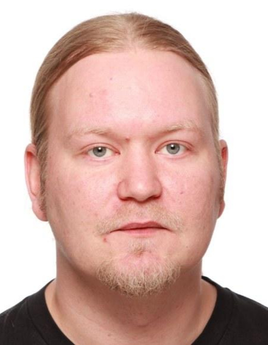

© Untitled. All rights reserved. Design: HTML5 UP.
Modifications (e.g., colour palette, layout, etc.) were made to the original design.
License: Creative Commons Attribution 3.0 Unported.
Joint Course on Chip Design
This page introduces the Joint Course on Chip Design, offered collaboratively by the five Edu4Chip partner universities.
Important note: This page provides a general overview of the joint Edu4Chip course. Course implementation, admission, credits, assessment, and local requirements are determined by each participating university. Contact your university representative for specific information.
Course description
This course provides an introduction to selected advanced topics in modern chip and digital system design, covering different abstraction levels from semiconductor manufacturing and circuit design to digital architectures, system integration, modelling, and hardware security.
The course is offered jointly within the Edu4Chip project and brings together lecturers from the participating universities and industry. The joint format gives students access to specialists working in complementary areas of chip design and exposes them to methods and technologies beyond those typically covered within a single course or institution.
The course covers topics including agile hardware design with Chisel, embedded RISC-V microcontroller systems, interconnects and on-chip communication architectures, virtual prototyping, IP-XACT-based SoC modelling, hardware security, laser fault-injection attacks and monitoring, neuromorphic architectures, CMOS manufacturing and design-rule violations, asynchronous circuit design, and phase-locked loop design.
The course consists of 14 online lectures, each approximately 1.5 hours, delivered by lecturers from the Edu4Chip partner institutions and industry. Depending on the local implementation, students may also investigate a selected topic in greater depth through a small project and written report.
Learning objectives
The joint lectures address the following learning objectives. Specific requirements and assessment are defined by each university. After completing the course, students should be able to:
- Explain principles and methods used in selected advanced chip-design topics, including hardware design, system integration, circuit design, security, and manufacturing.
- Apply agile hardware-design concepts and hardware construction languages, such as Chisel, to the development of digital hardware.
- Analyse embedded RISC-V microcontroller systems and explain how processors, memories, peripherals, and communication structures are integrated in an SoC.
- Analyse and compare interconnect and on-chip communication architectures with respect to their structure, scalability, and suitability for different system requirements.
- Explain and apply system-level modelling approaches, including virtual prototyping and IP-XACT-based SoC modelling, for the description and integration of complex hardware systems.
- Analyse security threats affecting hardware systems, including fault-injection attacks, and evaluate techniques for detecting or monitoring such attacks.
- Explain the principles of neuromorphic architectures and their role in modern chip design.
- Explain relevant CMOS manufacturing constraints and design-rule checking, and analyse the causes and implications of design-rule violations.
- Compare synchronous and asynchronous circuit-design approaches and analyse the implementation considerations associated with asynchronous circuits.
- Explain the operating principles and design considerations of phase-locked loops and their role in integrated systems.
- Investigate, evaluate, and communicate an advanced chip-design topic in greater depth using suitable technical methods and clear technical communication.
Course information
| Teaching format | Joint online Edu4Chip course |
| Teaching period | 22 October – 8 December 2026 |
| Teaching days | Tuesdays and Thursdays according to the lecture plan |
| Time slot | 16:45–18:15 CET |
| Number of lectures | 14 |
| Lecture duration | Approx. 1.5 hours |
Lecture plan
| Date | Lecture | Lecturer |
|---|---|---|
| Thu 22 Oct 2026 | Welcome, Organization, Course Outline, Edu4Chip | Michael Pehl (TUM) |
| Tue 27 Oct 2026 | IP-XACT SoC Modeling | Arto Oinonen (TAU) |
| Thu 29 Oct 2026 | Agile Hardware Design with Chisel – I | Martin Schoeberl (DTU) |
| Tue 3 Nov 2026 | Developing Embedded RISC-V Microcontroller Systems | Antti Nurmi (TAU) |
| Thu 5 Nov 2026 | Agile Hardware Design with Chisel – II | Martin Schoeberl (DTU) |
| Tue 10 Nov 2026 | Interconnects and On-Chip Communication Architectures | Luca Pezzarossa (DTU) |
| Thu 12 Nov 2026 | Introduction into Virtual Prototyping | Eyck Jentzsch (MINRES) |
| Tue 17 Nov 2026 | Security Aspects of Hardware Design | Michael Pehl (TUM) |
| Thu 19 Nov 2026 | Laser Fault Injection Attacks: From Mechanism to Modelling | Jean-Max Dutertre (IMT/MSE) |
| Tue 24 Nov 2026 | Monitoring Fault Injection Attacks with Sensors | Jean-Max Dutertre (IMT/MSE) |
| Thu 26 Nov 2026 | Explorations in Neuromorphic Architectures | Ahmed Hemani (KTH) |
| Tue 1 Dec 2026 | CMOS Manufacturing and DRC Violations | Per-Erik Hellström (KTH) |
| Thu 3 Dec 2026 | Asynchronous Circuit Design: Concepts, Methods, and Implementation Aspects | Ole Richter (DTU) |
| Tue 8 Dec 2026 | Design of Phase-Locked Loops | Markus Dietl (TUM) |
University contacts
For information about enrollment, credits, assessment, and local course requirements, please contact the representative at your university.
Technical University of Munich (TUM)
|
Contact person: Michael Pehl Mail: m.pehl@tum.de |
KTH Royal Institute of Technology
|
Contact person: Ahmed Hemani Mail: hemani@kth.se |
Technical University of Denmark (DTU)
|
Contact person: Luca Pezzarossa Mail: lpez@dtu.dk |
Tampere University (TAU)
|
 |
Contact person: Arto Oinonen Mail: arto.oinonen@tuni.fi |
Institut Mines-Télécom (IMT)
|
Contact person: Jean-Max Dutertre Mail: dutertre@emse.fr |